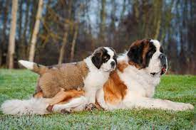
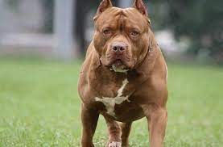
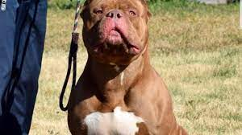
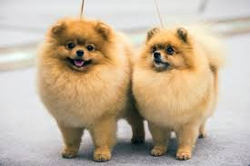
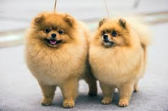

Saint Bernard
Saint Bernard, also spelled St. Bernard,
also called Saint Bernard dog,
working dog credited with saving the lives of
more than 2,000 people in 300 years
of service as a pathfinder and rescue
dog at the hospice founded by
St. Bernard of Aosta (also called St. Bernard of Menthon)
in the Great St. Bernard Pass in the southwestern Pennine Alps.
A powerfully built, muscular dog with a massive head and drooping ears,
the Saint Bernard stands 26 to 30 inches
(66 to 76 cm) tall at the withers and weighs
120 to 180 pounds (54 to 82 kg).
Its coat is red-brown and white or brindle and white and may be
either short and dense or medium-long.
The long-haired variety of Saint Bernard was produced by crosses
with the Newfoundland dog in the early 19th century.


Pitbull
Pitbull, also called American Pit Bull Terrier or Pit Bull Terrier,
fighting dog developed in 19th-century England, Scotland, and Ireland from bulldog and
terrier ancestry for hunting, specifically capturing and restraining semi-feral livestock.
The name has been applied historically to several breeds of dogs—including the bull terrier,
American Staffordshire Terrier, and Staffordshire Bull Terrier—but it is not recognized as a distinct
breed by the American Kennel Club. The United Kennel Club, however, first recognized the breed,
which it calls the American Pit Bull Terrier, in 1898.
 

Toy Dogs
Toy dog breeds have the unique ability to make us fall in love with them at first sight.
They're tiny, never too far behind their owner and with a resolute determination
to spend hours in their lap if given the chance. They're the perfect companion by nature,
but there are a few things to know before adding them as a new member to the family.
Unlike most of the other groups, toy breeds were not generally bred to work. While dogs such as the pastoral breeds or the gundogs were developed by utilising their natural canine hunting/scavenging behaviours to do various jobs, this group was developed from the natural social needs of the dog - especially their ability to bond closely to humans.
This group is formed of small to tiny dogs from around the world who have been bred as companions -
even if a few may have come from originally working ancestors. In most cases they were companions to
wealthy ladies or royalty (or in some instances, religious orders).